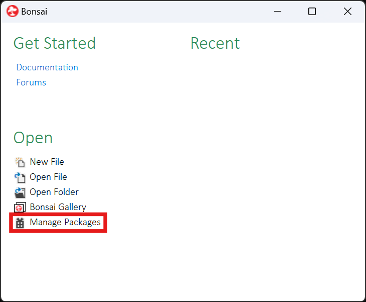
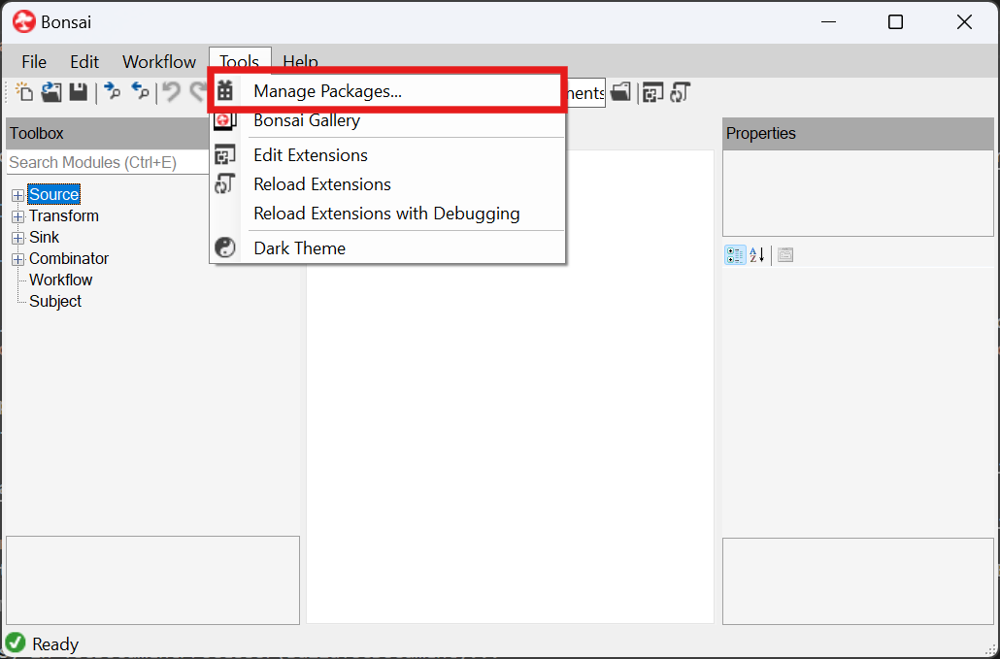
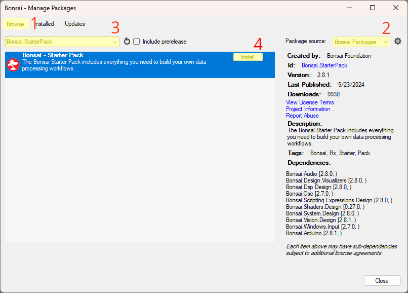
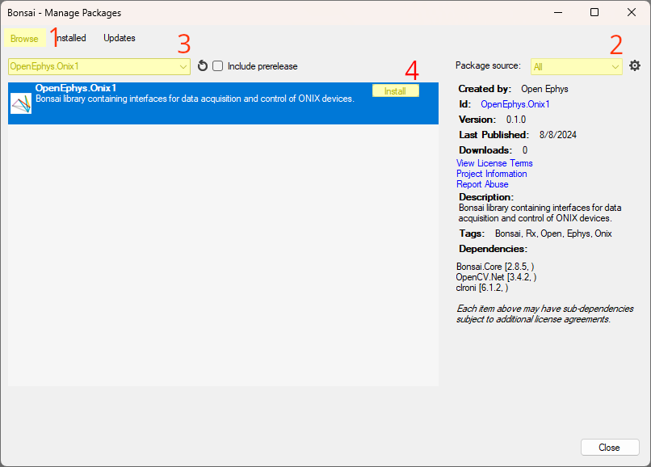
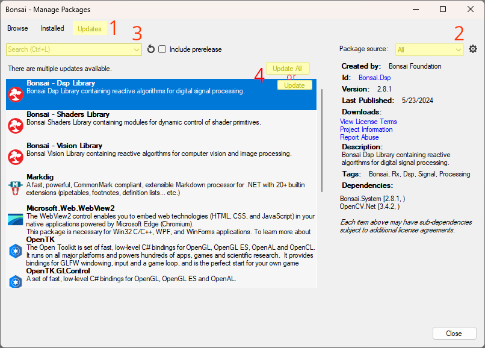

Bonsai Installation and Configuration
Install Bonsai
To download Bonsai, select between the portable download and the installer download here.
The Portable download installs a sandboxed version of Bonsai. Portable environments enable users to switch between different environments to prevent package conflicts or confusion between similar packages.
- To install from the Portable download, extract the downloaded file. You can start the portable Bonsai by running the
Bonsai.exethat is inside the extracted folder.
- To install from the Portable download, extract the downloaded file. You can start the portable Bonsai by running the
The Installer download installs Bonsai and all its dependencies globally.
- To install from the Installer download, run the downloaded
Bonsai-X.X.X.exefile and agree to the involved licenses. You can start the globally installed Bonsai by launching it from theBonsai Setupwindow after installing or searching for it in your OS's search function, for example. You can create a shortcut such that the portable Bonsai environment is easy and name it such that it is easy to differentiate between different environments.
- To install from the Installer download, run the downloaded
To use Bonsai for interfacing with Open Ephys hardware in a meaningful way, additional packages are required.
Open Bonsai Package Manager
The Bonsai package manager can be accessed from Bonsai's landing window or its workflow editor:

or
Install Packages in Bonsai
The two required packages to run the workflows in this documentation are:
Bonsai.StarterPackOpenEphys.Onix1
Additional packages may be required if you wish to use Bonsai in ways that extend beyond the scope of this documentation.
Bonsai.StarterPack
Install the Bonsai.StarterPack package. Open the package manager and:
Click the
Browsetab.Set
Package sourcetoBonsai Packages.Search for
Bonsai.StarterPack.Click
Install.

OpenEphys.Onix1
Install the OpenEphys.Onix1 package. Open the package manager and:
Click the
Browsetab.Set
Package sourcetoAllorNuGet.Search
OpenEphys.Onix1.Click
Install.Click
I Acceptwhen the license agreement window appears.

Update Packages in Bonsai
It is good practice to periodically check for package updates. Open the package manager and:
Click the
Updatetab.Set
Package sourcetoAll.Leave the search bar blank if you want to check for updates for all packages.
Alternatively, if you want to check for an update for a particular package, you may type that package's name in the search bar to expedite the update retrieval process.Click
Update Allif you want to perform all available updates.
Alternatively, click on a package and clickUpdateif you want to perform a subset of the available updates.

Next Steps
Now that Bonsai has been installed and configured, it is time to start placing operators and configuring those. If you are new to Bonsai, the following sections give a high-level understanding of how Bonsai is organized, and some of the ONIX-specific concepts that will be useful for learning how to work with the operators.